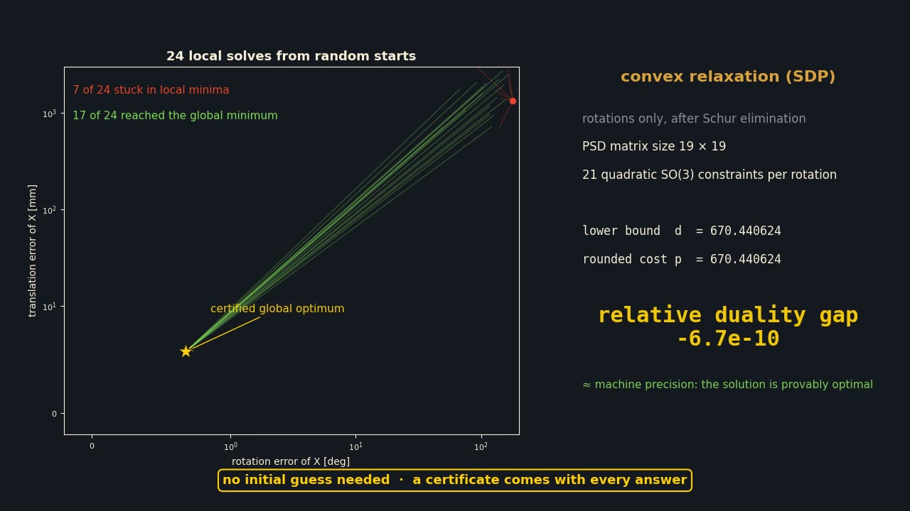
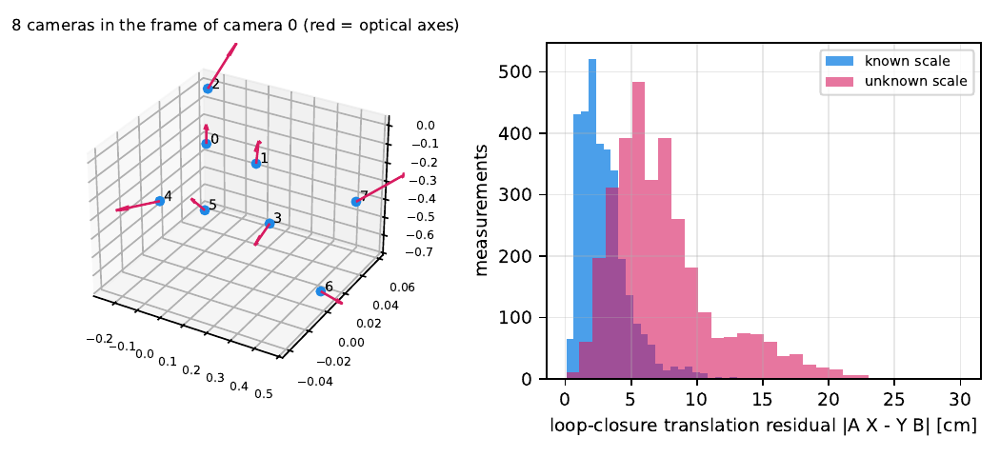

In one strip

Ai X = Y Bi
The arm reports the hand pose Ai; the camera reports the target pose Bi. The unknowns are hand→camera X and base→target Y. With several cameras and several targets it is a bipartite graph of such loops, and a monocular camera adds an unknown scale α.

Rotations only, then lift
Translations and α are eliminated by a Schur complement. Each rotation becomes nine numbers with 21 quadratic constraints; the Shor relaxation is a semidefinite program whose value bounds the true cost from below. If the rounded answer meets the bound, it is provably optimal.

Eight cameras, sixteen tags, one problem
The published rig data: 73 camera–tag pairs, 3,230 pose pairs. One 217-dimensional SDP returns all 24 poses with a duality gap at machine precision, and with the scale free it reports the tags 2.5 % smaller than measured, as the paper found.